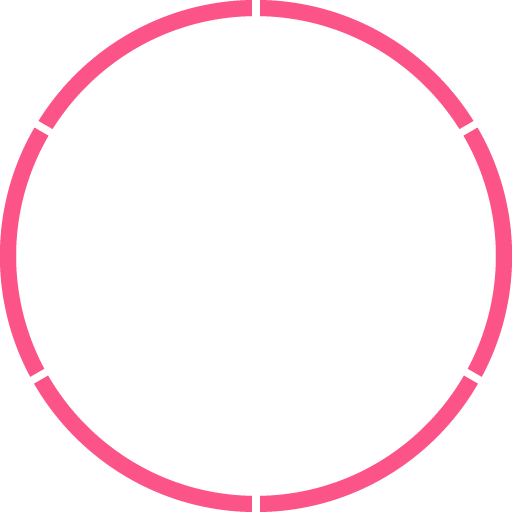

<ion-content>
    <ion-refresher (ionRefresh)="doRefresh($event)"> 
        <ion-refresher-content
            pullingIcon="arrow-dropdown"
            pullingText="下拉刷新"
            refreshingSpinner="circles"
            refreshingText="刷新..."> 
        </ion-refresher-content>
        <ion-refresher-content > 
    </ion-refresher-content>
    </ion-refresher>

  <div class="banner">
    <div class="num">
      <div class="num1">
        <p>{{OnlineCount}}</p>
        <span>在线</span>
      </div>
      <div class="num2">
        <p>{{AccountCount}}</p>
        <span>总设备数</span>
      </div>
      <div class="num3">
        <p>{{OfflineCount}}</p>
        <span>离线</span>
      </div>
    </div>
  </div>
  <div class="content-card">
    <div class="circle" (click)="gotoAlarm()">
      <p>{{FaultCount}}</p>
      <span>今日报警</span>
      
    </div>
    <div class="charts">
      <div class="chart-hint">
        <span class="dot"></span>设备报警次数排名
      </div>
      <div id="chart" style="width: 100%;height:260px;"></div>
    </div>
  </div>
</ion-content>